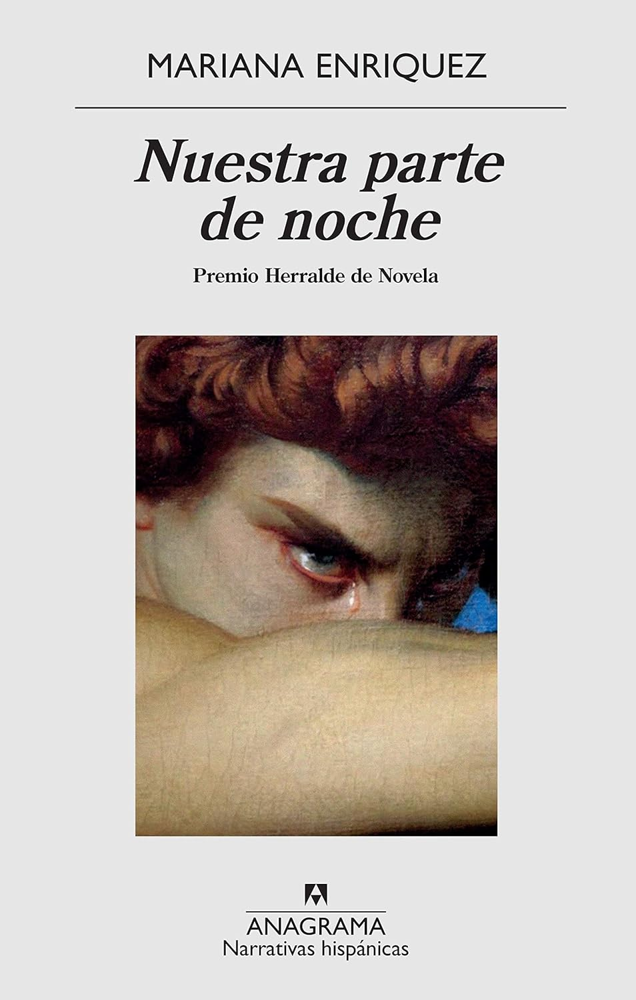
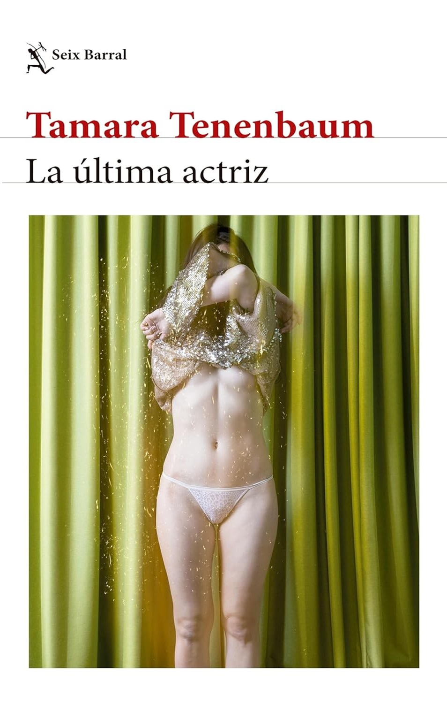
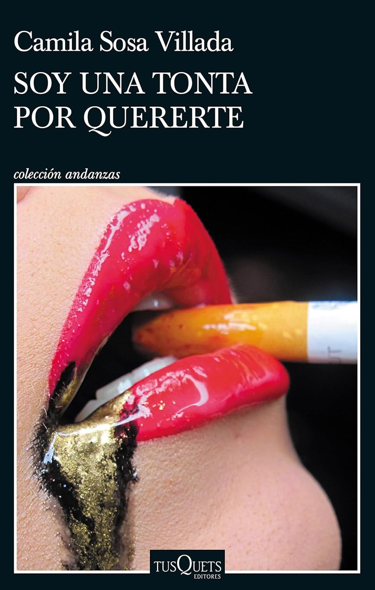

Nuestra parte de noche
Mariana Enriquez
La novela se centra en la convivencia entre lo
histórico y lo
sobrenatural, y la construcción de los personajes es excepcional.
La historia se desarrolla en torno a una secta regida por lo que llaman la Oscuridad.
A través de la narrativa, Enriquez inventa puertas para que el lector las abra, entre el
sigilo y el
estupor. Desde las vidas comunes de algunos personajes comienzan a aparecer sitios o escenas
que
invitan a la extrañidad, pero también a las más espeluznantes pesadillas y luego al horror
que
convierte al lenguaje en experiencia de lo indecible.
La novela también aborda aspectos de la dictadura militar argentina, aunque no es el tema
central.
A través de la historia, se exploran temas de ocultismo, extravío macabro y la tensión entre
lo que
parece real y lo que se adivina como siniestro.
En resumen, “Nuestra parte de noche” es una obra que desafía las convenciones del género y
ofrece
una lectura profunda y cautivadora.
Cometierra
Dolores Reyes
La historia es narrada por una joven huérfana conocida
como
Cometierra, quien tiene el poder de conectar con víctimas femeninas desaparecidas al comer
un poco
de tierra que ha tenido contacto con la víctima.
A lo largo de la historia, Cometierra usa su don para ayudar a encontrar a mujeres
desaparecidas,
ingiriendo tierra de la casa de la persona desaparecida para tener visiones y poder
encontrarla.
Aunque la novela aborda temas de femicidios y trata de blancas, también se centra en cómo
Cometierra
percibe su vida como vidente y huérfana, y cómo crece y enfrenta las cosas de manera
diferente a
como lo hacía de niña.
La novela es visual y sensorial, con una estructura parecida a la novela policíaca, con
Cometierra
resolviendo un caso tras otro. Además, la obra es reconocida por su cruda descripción de la
realidad
social y la presencia de lo sobrenatural.
En resumen, “Cometierra” es una obra que logra entrelazar magistralmente diferentes géneros
literarios y elementos temáticos, ofreciendo una historia que impacta por su cruda
descripción de la
realidad social y la presencia de lo sobrenatural.

La última actríz
Tamara Tenenbaum
La historia se centra en dos mujeres de diferentes
épocas,
explorando la identidad femenina a través del tiempo y la memoria.
La protagonista, Sabrina, es una estudiante de Artes que, impulsada por su director de tesis
y
amante, Gabriel, decide investigar las huellas del teatro judío en Argentina. Para ello,
recurre a
Jaim, un viejo profesor que le sugiere revisar los restos de los archivos de la AMIA, la
mutual que
sufrió un atentado terrorista en 1994.
En su investigación, Sabrina descubre el diario de Jana, una actriz del teatro ídish en
Buenos Aires
en la década de 1960. A medida que avanza en su investigación, Sabrina se obsesiona con
seguir las
huellas de Jana, hasta el punto de que todo lo demás en su vida, incluyendo su familia, su
carrera
académica y su relación con Gabriel, pasa a un segundo plano.
La novela es reconocida por su inteligencia narrativa excepcional, con dos personajes
femeninos
perturbadores y una trama tan elusiva como hipnótica. Trata temas como ser mujer, el deseo y
la
realización, el mito del díbuk y la posesión del cuerpo, la tradición y la modernidad, la
ciudad de
Buenos Aires y la búsqueda de una clave existencial entre un montón de papeles quemados.
En resumen, “La última actriz” es una obra que logra entrelazar magistralmente diferentes
géneros
literarios y elementos temáticos, ofreciendo una historia que impacta por su cruda
descripción de la
realidad social y la presencia de lo sobrenatural.
La infancia del mundo
Michel Nieva
La historia se desarrolla en el siglo XXIII, en un
mundo
transformado por el cambio climático.
El protagonista de la historia es un niño mutante conocido como “el niño dengue”, que es
testigo de
un mundo en el que la élite en el poder ha terraformado el planeta para su bienestar y
enriquecimiento, mientras que el resto de la población vive en la más brutal precariedad. El
niño
dengue descubre que su nacimiento es producto de un experimento corporativo sobre capas
marginales
de la sociedad con el fin de especular sobre el mercado de "virofinanzas".
La novela es reconocida por su crítica feroz a la influencia desmedida de las corporaciones
y su
búsqueda incesante de ganancias a expensas de la humanidad.
En resumen, “La infancia del mundo” es una obra que ofrece una mirada ciberpunk planteando
una
crítica a ciertos rasgos del capitalismo global contemporáneo como el cambio climático, la
especulación financiera y la industria farmacéutica, el extractivismo, la gentrificación, e
incluso
la violencia infantil y la desigualdad social.
Las indignas
Agustina Bazterrica
La historia se desarrolla en un mundo
post-apocalíptico,
después de una serie de catástrofes ambientales.
La trama gira en torno a un grupo de mujeres que viven en una especie de convento, bajo el
control
de una secta religiosa. Estas mujeres son sometidas a torturas, sacrificios y ceremonias
terroríficas en nombre de la iluminación. Son vigiladas por la Hermana Superior y un
misterioso
personaje conocido solo como "Él".
La narradora es una de estas mujeres, que escribe en secreto sobre lo que sucede dentro del
convento. A través de su relato, Bazterrica explora temas como el patriarcado, el abuso de
poder y
la amistad.
La novela es reconocida por su narrativa truculenta, que logra enmascarar con cierto
lirismo. “Las
indignas” ofrece una visión perturbadora de un futuro distópico.
Las niñas del naranjel
Gabriela Cabezón Cámara
La historia se basa en la vida de Catalina de Erauso,
una
novicia del convento de Donostia, España, en el siglo XVI, que a los 15 años huye y termina
en
América convertida en Antonio, un alférez.
La trama se desarrolla en un mundo post-apocalíptico, después de una serie de catástrofes
ambientales. Antonio, junto con dos niñas guaraníes, Mitakuña y Michí, y algunos animales,
se
interna en la selva. Mientras las protege, les cuenta variadas historias al igual que hace
con su
tía (priora del convento del que escapó), mediante una larga carta en la que le (nos) cuenta
qué fue
de su vida durante casi treinta años y le pide perdón por haberla abandonado.
La novela es reconocida por su crítica social, especialmente referida a la colonización
española.
Además, aborda temas como la identidad sexual y la soledad del ser humano. La narración y la
poesía
se imbrican de un modo admirable, creando una polifonía digna de mencionar.
La llamada
Leila Guerriero
La obra es un retrato de la vida de Silvia Labayru, una
argentina que en su adolescencia era tímida, lectora, amante de los animales y entusiasta de
John F.
Kennedy. A los trece años, ingresó en el Colegio Nacional Buenos Aires, donde entró en
contacto con
agrupaciones estudiantiles de izquierda y se transformó en una militante aguerrida.
En marzo de 1976, embarazada de cinco meses y con veinte años, Labayru integraba el sector
de
Inteligencia de la organización Montoneros, un grupo armado de extracción peronista. Fue
secuestrada
por militares y trasladada a la ESMA, la Escuela de Mecánica de la Armada, donde funcionaba
un
centro de detención clandestino en el cual se torturó y asesinó a miles de personas. Allí
tuvo a su
hija que, una semana más tarde, fue entregada a los abuelos paternos.
En la ESMA, Labayru fue torturada, obligada a realizar trabajo esclavo, violada
reiteradamente por
un oficial y forzada a representar el papel de hermana de Alfredo Astiz, un miembro de la
Armada que
se había infiltrado en la organización Madres de Plaza de Mayo. La liberaron en junio de
1978 y en
el avión rumbo a Madrid, junto a su hija de un año y medio, pensó: «Se acabó el infierno».
Pero el
infierno no había terminado.
Los argentinos en el exilio la repudiaron, acusándola de traidora a raíz de la desaparición
de las
Madres. Abominada por quienes habían sido sus compañeros de militancia, arropada por unos
pocos
amigos fieles exiliados en Europa, hizo una vida.
Guerriero entrevistó durante dos años, de 2021 a 2023, a Silvia Labayru, antigua integrante
del
grupo armado de extracción peronista Montoneros. Con retazos de conversaciones,
transcripciones de
testimonios judiciales, telegramas, emails y poemas, Guerriero realiza un trabajo formidable
al
desgranar cada elemento y situarlo en el lugar exacto que le corresponde para construir un
engranaje
robusto con piezas sueltas.
Es una historia real, llena de aristas y sombras, sobre la condición humana. Un gran mosaico
que,
visto en conjunto, ofrece una imagen definida y equilibrada de la época, de las
circunstancias y de
la protagonista.

Soy una tonta por quererte
Camila Sosa Villada
Este libro consta de nueve relatos que exploran la fina
línea
que separa la realidad de lo prodigioso.
Los relatos están habitados por personajes extravagantes y profundamente humanos que se
enfrentan de
maneras tan extrañas como ellos mismos a una realidad ominosa. Algunos de los relatos
incluyen:
- Una mujer que se gana la vida como novia de alquiler de hombres gays en la década de los
años 90.
- En un fumadero de Harlem, una travesti latina conoce íntimamente nada menos que a Billie
Holiday.
- Un grupo de rugbiers regatea el precio de una noche de sexo y a cambio recibe su merecido.
- Monjas, abuelas, niños y perros nunca son lo que parecen.
Camila Sosa Villada, autora del libro, es reconocida por su capacidad para hablar la lengua
de una
víctima de la inquisición mexicana y construir un universo distópico donde la existencia
travesti se
toma su revancha.
El estilo único, la autora, franquea los límites entre la realidad y la magia en estos
cuentos,
honrando la tradición oral con soltura y solidez inigualables.